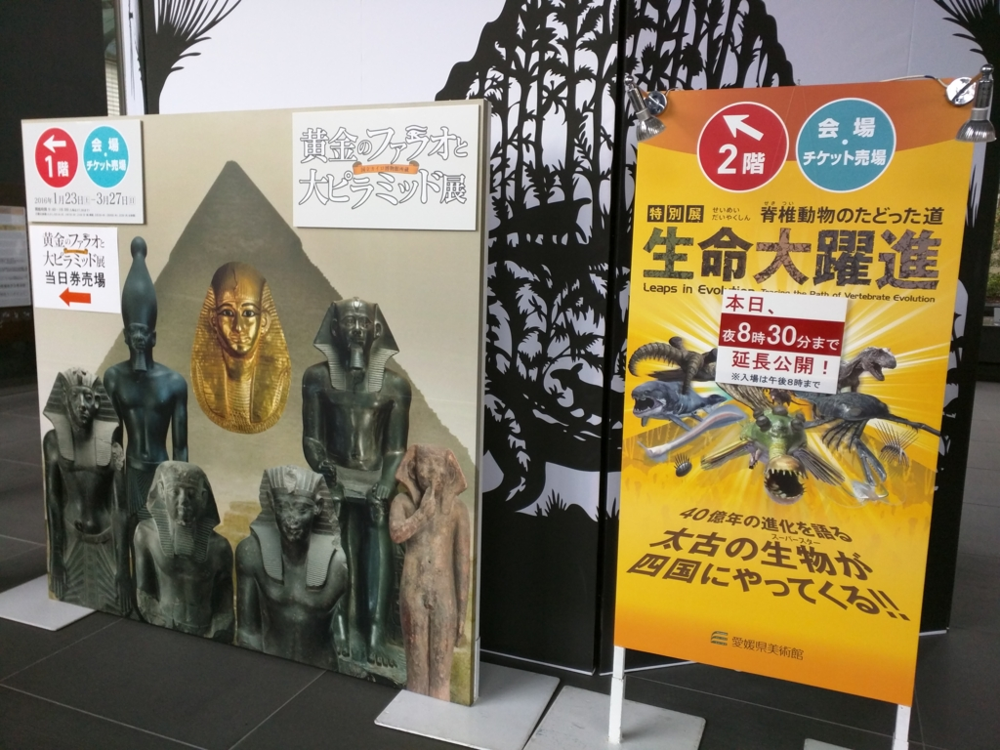
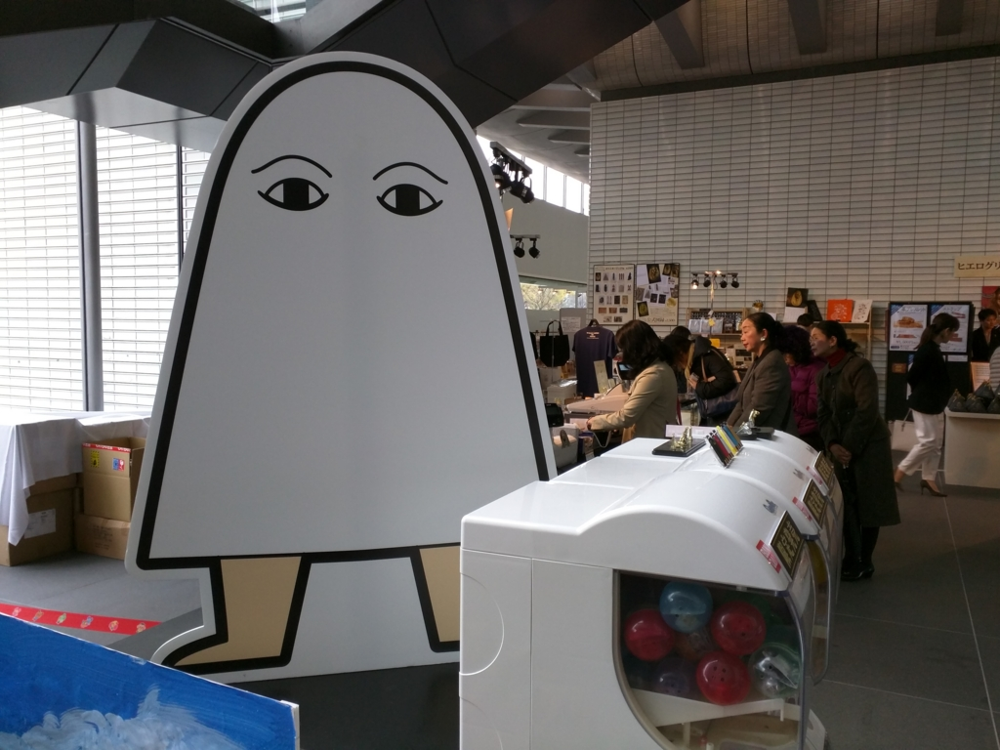
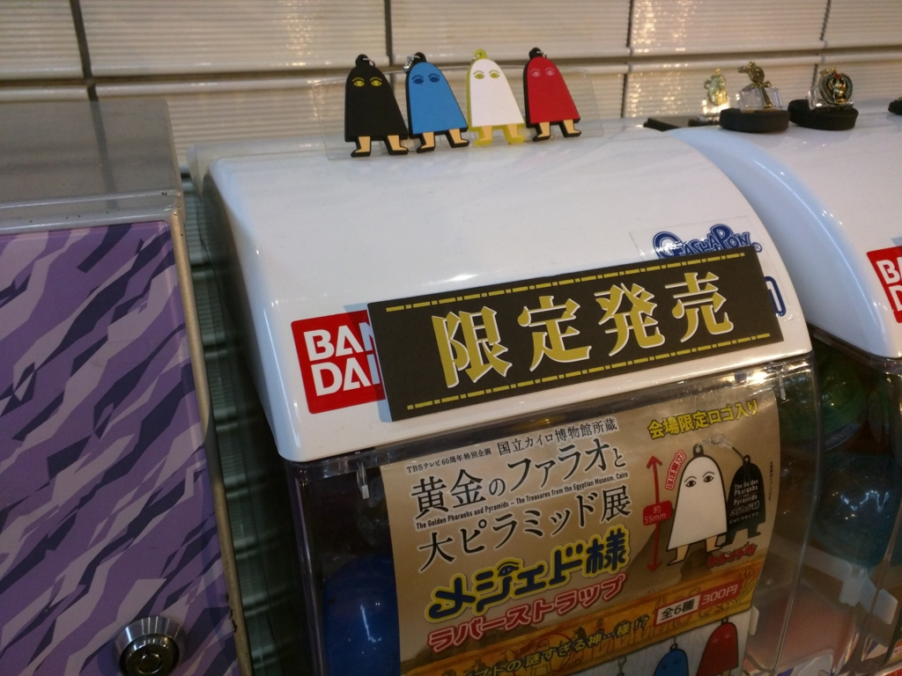
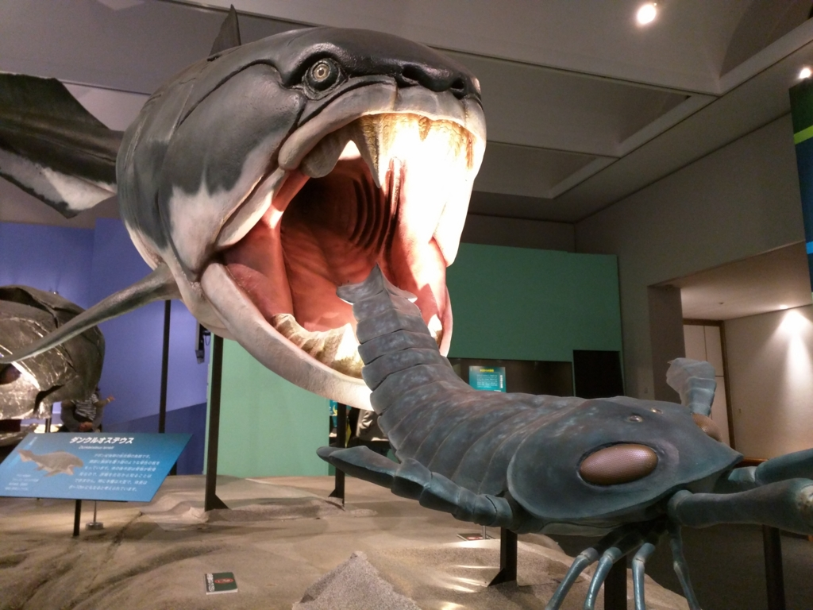
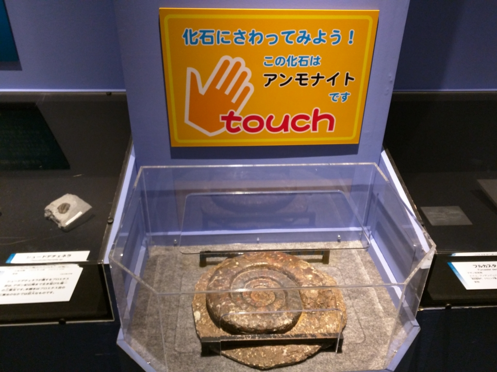
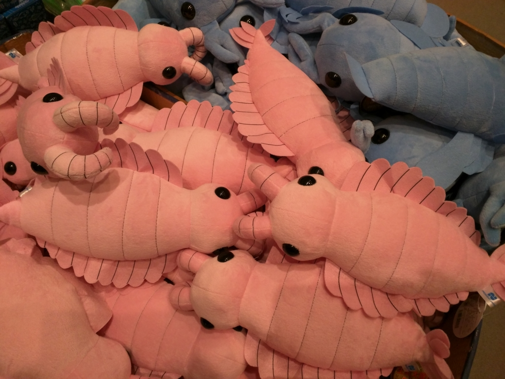
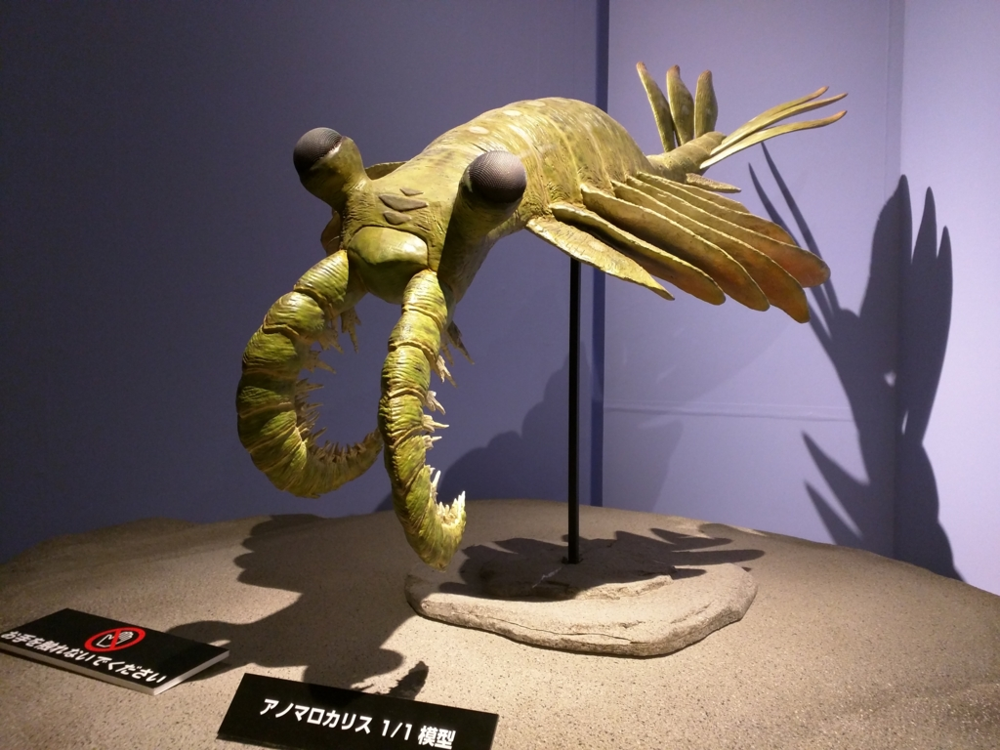
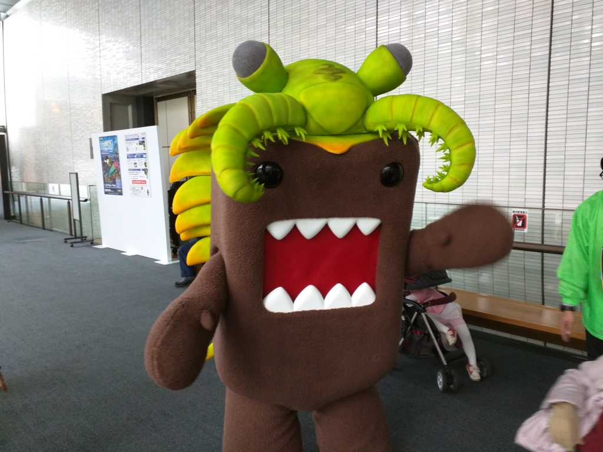
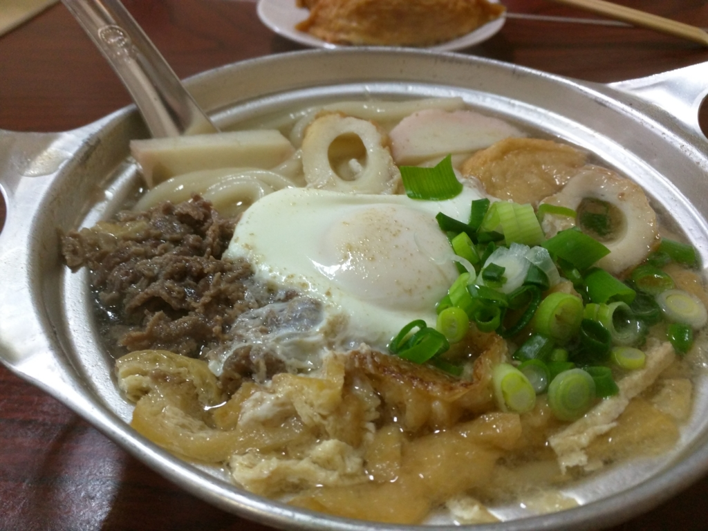

愛媛県美術館：「黄金のファラオと大ピラミッド展」と「特別展 生命大躍進」
公開日：

横浜からきた友人が帰る日、ちょっと時間が余ったので愛媛県立美術館へ行った。やっていたのは「黄金のファラオと大ピラミッド展」と「特別展 生命大躍進」。
黄金のファラオと大ピラミッド展

およそ4,500年前、古代エジプトの古王国時代（紀元前2586～2185年）にクフ王、カフラー王、メンカウラ―王の３代のファラオたちが建造した巨大なピラミッド群は、古代ギリシア時代から「世界七不思議」の中でも第一番の不思議として知られ、現代でも世界遺産に登録されるなど、いつの時代も訪れる人々を魅了してきた巨大な建造物です。ピラミッドは、どんな人が、どのように造ったのか？建造したファラオとはどんな人物だったのか？ピラミッド時代以降、ファラオたちは何を創ったのか？これらは未だ大きな謎に包まれています。
本展は、１８万点を数える国立カイロ博物館所蔵の古代エジプトの至宝から選りすぐった１００点あまりを展示するとともに、多くの謎を解明するため、映像展示も駆使して、古代エジプトの世界をダイナミックに紹介します。３大黄金マスクの１つ《アメンエムオペト王の黄金のマスク》や、特に保存状態が良く美しい《アメンエムペルムウトの彩色木棺》など、現在渡航困難なエジプトから第一級のコレクションが来日する貴重な機会です。また、ツタンカーメン王の黄金のマスクをケースから出した状態で撮影した映像も４Kシアターで上映します。
撮影禁止だったので、手元に写真がなく、記憶があやふやなのだが……ピラミッドって言っても色々あるんだなーと思った（それだけかよ！！）。あと、木の遺物が残ってたりするのはエジプトらしいと思った。女性のアクセサリーなんかは、いまでも通用しそうなデザインだよな。そういう意味では身近に感じた。

あと、妙に「メジェドさま」推しだったので、お土産にガチャガチャやってきた。なんか黒いメジェドさまがでた。キーホルダーにヒエログリフで名前を彫ってくれるみたいなのもあって面白そうだったけど、なんとなくスルーしてしまった。
特別展 生命大躍進

生命はおよそ４０億年という進化の過程で繁栄と絶滅を積み重ね、現在の姿を獲得してきました。その間、飛躍的な進化をもたらした“生命の大躍進”ともいうべき重要な出来事がありました。たとえば「眼の獲得」「海からの上陸」「胎盤の獲得」などです。これらの生命進化の歴史は化石によって裏付けられます。化石はいわば、進化の歴史を振り返るためのタイムカプセルです。
本展では、展覧会の趣旨に賛同した世界各地の研究機関の協力により、ロイヤル・オンタリオ博物館が所蔵する門外不出のバージェンス頁岩動物群など、生命進化の各時代を代表する極めて重要な実物化石が奇跡的に一同に会することとなりました。
展示にあたっては、これらの貴重な化石にＤＮＡに関する最新の研究成果を織り交ぜ、精巧な複製標本や４Ｋ映像を活用しながら、脊椎動物が歩んできた壮大な進化の道のりを分かりやすく説明していきます。空前のスケールで生命進化の歴史を解き明かす展覧会をぜひご覧ください。
わしは Twitter で https://twitter.com/ittayuu をフォローする程度で、古代の生き物についてはなんも知らんのだけど、案外面白かった。
首が短めな首長竜リオプレウロドン。ジュラ紀後期の海の覇者でした 最大で25メートルの個体もいたと推測されています pic.twitter.com/rPCQNisT1c
— 古代種生物図鑑 (@ittayuu) 2016年3月4日
でも、化石って割りと細かいのな。なんか古い時代の小さな生き物だと、石についたシミと区別がつかん。こういうのから元の姿を想像するんだろうけど、その妥当性ってどうやって検証するんだろう？ そのあたりは「まぁ、仕方ないよね」って感じなのだろうか。

アンモナイトも触ってみたけど、どうにも気持ち悪かった。絵で見るのは嫌いじゃないけど、実物に会うのはあまり好きじゃないみたい。

お土産屋さんには、アノマロカリス（？）のぬいぐるみなんかが売ってた。ちょっとほしかったけど、我慢。

ちなみにアノマロカリスってこんなやつな。

あと、外に変なのがいたけれど気にしない。
追記

お昼ご飯は、アサヒで鍋焼きうどんを食べた。途中、雨に降られたのが難儀だったけど、まぁ、楽しかった。